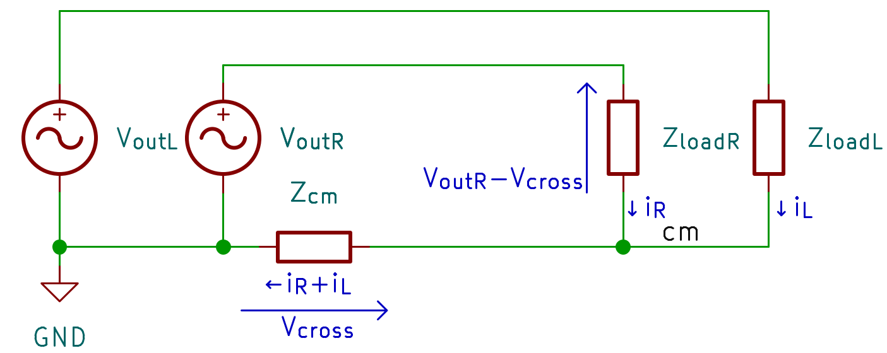
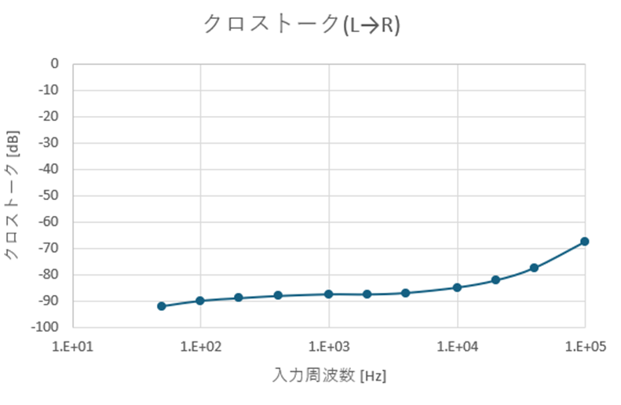

入出力アンバランスかつレールスプリッタによるGND生成にもかかわらず、全可聴帯域でクロストーク -80dB以下を実現したヘッドホンアンプ。 減算回路を用いた出力段により、共通インピーダンスZcmによるクロストークを大幅に抑制している。
負荷から戻る電流 (iR+iL) が共通インピーダンスZcmで電圧に変換され、もう一方のチャンネルに混入する。概算式:
レールスプリッタIC、TLE2426の出力抵抗 7.5mΩ、コネクタ接触抵抗 数mΩ等を考えるとZcm=10mΩを切るのは困難。Zload=60Ωとすれば理論限界は約 -75.6dB であり、-80dB以下にするには根本的な回路工夫が必須。
両ch 51Ω負荷・出力 1Vrmsの正弦波で測定。全可聴帯域で -80dB以下、50Hzでは -90dB以下を達成。ただしDMMの保証確度以下なので参考値。

